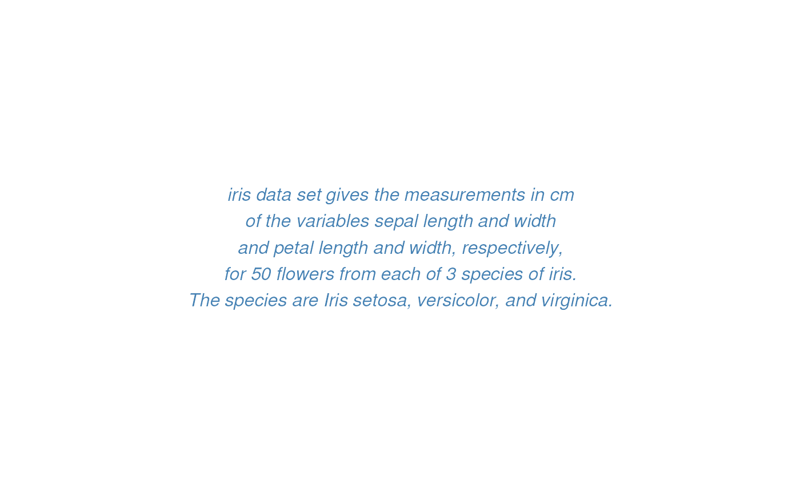

Create easily a customized text grob (graphical object). Wrapper around
textGrob.
text_grob(
label,
just = "centre",
hjust = NULL,
vjust = NULL,
rot = 0,
color = "black",
face = "plain",
size = NULL,
lineheight = NULL,
family = NULL,
...
)A character or expression vector. Other
objects are coerced by as.graphicsAnnot.
The justification of the text
relative to its (x, y) location. If there are two values, the first
value specifies horizontal justification and the second value specifies
vertical justification. Possible string values are: "left",
"right", "centre", "center", "bottom",
and "top". For numeric values, 0 means left (bottom) alignment
and 1 means right (top) alignment.
A numeric vector specifying horizontal justification.
If specified, overrides the just setting.
A numeric vector specifying vertical justification.
If specified, overrides the just setting.
The angle to rotate the text.
text font color.
font face. Allowed values include one of "plain", "bold",
"italic", "bold.italic".
font size (e.g.: size = 12)
line height (e.g.: lineheight = 2).
font family.
other arguments passed to textGrob.
a text grob.
text <- paste("iris data set gives the measurements in cm",
"of the variables sepal length and width",
"and petal length and width, respectively,",
"for 50 flowers from each of 3 species of iris.",
"The species are Iris setosa, versicolor, and virginica.", sep = "\n")
# Create a text grob
tgrob <- text_grob(text, face = "italic", color = "steelblue")
# Draw the text
as_ggplot(tgrob)
